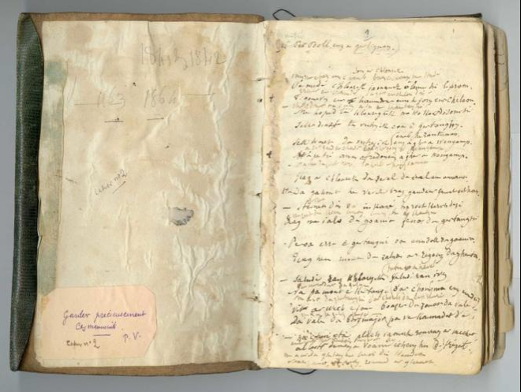

Kloarek Kertangi
Le clerc de Kertanguy
The clerk of Kertanguy
Chant collecté par Théodore Hersart de La Villemarqué
dans le 2ème Carnet de Keransquer (p. 1-3).

Mélodie
Arrangement Christian Souchon (c) 2018
|
A propos de la mélodie Elle a été notée, ainsi qu'une version plus courte du chant par le Colonel Alfred Bourgeois (1824-1904) dans le recueil "Kanaouennoù Pobl" qui ne fut publié qu'en 1959. Elle était chantée par Laurent Pennec à Châteaulin le 8 septembre 1890. (Source: le site de P. Quentel, "Son ha ton", voir liens). A propos du texte Cette pièce, que, semble-t-il, seuls La Villemarqué et Alfred Bourgeois ont recueillie, est un "chant de clerc" apparenté à Marguerite de La Boissière, si l'on en croit la note inscrite en marge de la page 3: "Son Margodik zo bet savet gant Visent Ar Bibi a chome e Gersalaün e barrez Leuc'han" , "La chanson de Margodic a été composée par Vincent Ar Bibi (fils de Pierre) qui demeurait à Kersalaün dans la paroisse de Leuhan". Elle aussi reflète une évolution caractéristique de la fin du XVIIème siècle: l'élévation de la classe des paysans aisés à un niveau de fortune comparable à celui de la petite noblesse, conduisant à des unions que cette dernière considérait comme des mésalliances. Ici, cependant, la situation est presque inversée: le clerc aisé est éconduit par une paysanne, dont il raillait les avances en exhibant ses lettres à sa famille. L'auteur de ce chant Il résulte d'un article de Goulven Péron, intitulé "La Villemarqué, allusions et illusions" (Kaier ar Poher N°66, octobre 2019) que "Vincent fils de Pierre" pourrait être "Vincent Le Roux, fils de Pierre et Marie-Jeanne Cozic, métayers de la famille Euzénou... baptisé à la métairie de Kersalaün le 25 février 1772 et décédé en 1802, le 15 frimaire an XI... Fils de paysans assez aisés, il avait habité dans un hameau de Leuhan, voisin de Kersalaün, appelé Kertanguy... En 1796, sa mère...possédait le moulin de Kersalaün...et de nombreuses terres ...notamment... à Kertanguy qu'elle louait à son fils Vincent." Comme disent aujourd'hui (octobre 2019) les journalistes, ce Vincent Le Roux coche toutes les cases pour prétendre être, à la fois, le "Visent ar Bibi" de la note et le "Clerc de Kertanguy" de la présente gwerz. On peut penser qu'il était aussi l'auteur de ce chant qui serait dès lors autobiographique. La note de la page 3 suggère qu'il était (aussi) l'auteur du "Margodik" visé ci-dessus. Cette gwerz raconte en effet une histoire similaire que La Villemarqué lui-même date de 1763. Goulven Péron pense qu'il s'agit d'une confusion qu'il imputerait, plutôt qu'au chanteur Pierre-Paul de Kerbignan, à La Villemarqué lui-même. Le fait que la phrase soit notée en breton et non en français porterait à croire que c'est ledit Pierre-Paul qui considérait Vincent comme l'auteur de "Margodik". Le "Code paysan des quatorze paroisses", établi le 2 juillet 1675, lors de la Révolte du papier timbré ou des Bonnets Rouges dans la chapelle Notre-Dame de Tréminou en Plomeur stipule à l'article 5: Que pour affirmer la paix et la concorde entre les gentilshommes et nobles habitants desdites paroisses, il se fera des mariages entre eux, à condition, que les [filles] nobles choisiront leurs maris de condition commune, qu'elles anobliront et leur postérité, qui partagera également entre eux les biens de leurs successions... Signé "Torreben et les habitants" (Torr e benn= casse-lui la tête!, désigne un bâton destiné à cet usage.) Le second Carnet de collecte C'est sur ce chant que s'ouvre le second carnet de Keransquer qui porte sur des collectes réalisées après la première publication du Barzhaz, essentiellement sur la période 1841-1842, qui précède la seconde publication principale de l'ouvrage enrichi d'une trentaine de pièces. On remarque d'emblée que, pour se prémunir sans doute contre les reproches qui lui avaient été adressés à propos des éditions précédentes, le collecteur note l'identité de ses informateurs, en l'occurrence il indique: "Chantée par Per Boll euz a Gerbignan". Le chanteur "Pierre-Paul de Kerbignan" n'appartient pas à la double liste de 20 chanteurs de Nizon et des environs établie par la mère de l'auteur. Celui-ci a étendu ses recherches à d'autres secteurs: si "Kerbignan" correspond à Bignan, près de Locminé, il s'est rendu dans le Morbihan, dans le bourg natal d'un Chouan fameux, Pierre Guillemot.(1759-1805), dit le 'Roi de Bignan". Quant au bourg de Leuhan qu'il cite après le poème, c'est là qu'il a recueilli toute une série de chants en lien plus ou moins étroit avec la Chouannerie comme on l'a dit à propos du chant Le Faucon. Variantes: Comme on le voit sur le fac-similé ci-dessous de la 1ère page du carnet N°2, le texte noté présente une alternance, régulière au début, de lignes écrites au crayon, puis de lignes écrites à l'encre. Cette alternance se raréfie à partir de la ligne 15 pour disparaître complètement à la page 3. Quand elle existe, la ligne du dessus, tracée au crayon, semble, par le sens, être une variante de celle du dessous. A la page 2 une variante de 3 vers à la strophe 20 est notée en marge. La version de La Villemarqué comprend 24 distiques soit le double de celle collectée en 1890 par Alfred Bourgeois que l'on trouvera également ci-après. Cette dernière passe sous silence les propos embarrassés, puis enflammés de colère et d'orgueil du soupirant éconduit. |
About the tune It was recorded, along with a shorter version of the lyrics by Colonel Alfred Bourgeois (1824-1904) for the collection "Kanaouennoù Pobl" which was not published until 1959. It was sung by Laurent Pennec in Châteaulin on 8th September 1890. (Source: the site of P. Quentel, "Son ha ton", see links). About the lyrics This piece, apparently collected only by La Villemarqué and Alfred Bourgeois, is a so-called "clerk’s song", like Marguerite de La Boissière, as stated in the margin remark on page 3: "Son Margodik zo bet savet gant Visent Ar Bibi a chome e Gersalaün e barrez Leuc'han" , "The Song of Margodic was composed by Vincent Ar Bibi (=Son of Peter, "Peterson") who lived at Kersalaün in the parish Leuhan". It also documents a typical development in late 17th century’s Brittany: the rise of the rich farmers’ class to a level of wealth equal to that of the landed gentry, enabling the formers to consider wedding unions, which the latters often would discard as beneath their own stations. In the present song, it is almost the reversed situation: the clerk is a wealthy man who is turned down by a farmer’s daughter, whose advances he once made fun of, by exhibiting her letters to his family.. The author of this song It results from an article by Goulven Péron, entitled "La Villemarqué, allusions and illusions" (Kaier ar Poher N ° 66, October 2019) that "Vincent son of Pierre" could be "Vincent Le Roux, son of Pierre and Marie-Jeanne Cozic, sharecroppers of the Euzénou family ... baptized at the farm of Kersalaün on February 25, 1772 and died in 1802, on 15 Frimaire, year XI ... As a son of well-off peasants, he had lived in a hamlet of Leuhan, not far from Kersalaün, called Kertanguy ... In 1796, his mother ... owned the mill of Kersalaün ... and many lands ... in particular ... the Kertanguy estate which she rented to her son Vincent. " As journalists say nowadays (October 2019), this Vincent Le Roux "ticks all the boxes" to claim to be, both, the "Visent ar Bibi" of the note and the "Clerk of Kertanguy" of the gwerz at hand. One might think that he was also the author of this song which therefore would be autobiographical. The note on page 3 suggests that he was (also) the author of the "Margodik" referred to above. This gwerz tells indeed a similar story that La Villemarqué himself dates from 1763. Goulven Peron thinks it is a confusion he would not impute to the singer Pierre-Paul de Kerbignan, but to La Villemarque himself. The fact that the hint is noted in Breton and not in French would lead to believe that it was the said Pierre-Paul who considered Vincent as the author of "Margodik". The "Code paysan" of 1765 established by the representatives of 14 Breton parishes involved in the Stamped Paper revolt in Notre-Dame de Tréminou chapel, near Plomeur. They agreed to lay down their arms in exchange for concessions like this (article 5): “In order to forward peace and concord between noblemen and gentlemen dwelling in the said parishes, marriages between them will be allowed, so that noble [daughters] may choose their husbands among commoners, to whom they will confer a title of nobility as well as to their issues who are to benefit equally from the rights and assets that will be bequeathed to them...” Signed "Torreben and the other parish dwellers" (Torr e benn= “smash his head!” - a staff used as a truncheon). The second Collecting book It is with this song that La Villemarqué’s second collecting book opens. It encompasses pieces gathered after the first main edition of the Barzhaz was published, mainly during the 1841-1842 period, preceding the second edition which is enriched with about thirty additional items. We at once notice that, possibly to guard himself against reproaches made to him in connection with the foregoing editions, the collector carefully records the name and whereabouts of his informants, here for instance: "Chantée par Per Boll euz a Gerbignan". The singer "Peter-Paul of Kerbignan" is none of the 20 singers living in the Nizon neighbourhood who are recorded on the two lists put up by the author’s mother. La Villemarqué has evidently investigated other areas: if "Kerbignan" is for Bignan, near Locminé, he has gone to the Morbihan native town of a well-known Chouan fighter, Pierre Guillemot.(1759-1805), alias the 'King of Bignan". As for the town Leuhan quoted after the poem, it is the place where a long series of songs more or less closely relating to the Chouan revolt were collected, as stated in connection with the Hawk song. Variants: As we can see on the below facsimile picture of the 1st page of collecting book 2, the lyrics alternate lines recorded in ink and pencil, first in a thoroughly regular way, then, as from line15, more erratically, until page 3 where it no longer occurs. Wherever the system exists, the upper line drawn in pencil seems to be a variant to the ink line underneath it. On page 2, a 3 line variant to stanza 20 is written in the margin. La Villemarqué’s version consists of 24 distiches, i.e. twice as many as the below song collected in 1890 by Alfred Bourgeois, which ignores the evolving plea of the rejected wooer, first an awkward complaint, then a fiery accusation full of anger and pride. |
|
BREZHONEK p. 1 1. Pa oan-me barzh em c’hambr, barzh em c’hambr o studiñ Erruet ur c’hannadour, da gas ur c’heloù din: (1) 2. - Se’ dimet da vestrez a oa e Kertangi, M’ ho ped-ta, kloaregik, me ho gav dizoursi! 3. Sell, dimet da vestrez, ‘enep he santimant, Hag aet gant ur c’hannadour e ger gozh a Wengamp.- (2) 4. Me da zevel neuze, da zevel promptamant (3) Da gaout va mevel bras gant ur c’hannad ‘vitañ: 5. - Dibrit din va inkane, ha roit kerc’h dezhi, Rag me yelo da goaniañ fenozh e Kertangi. -(4) 6. P’oe erruet e Kertangi, oa en daol da goaniañ Hag eñ mont da zaludiñ ar re gozh da gentañ: 7. - Saludiñ ran, kloaregik, saludiñ ran ivez (5) Na p’a maout e Kertangi d’an eur-mañ eus an deiz? -(6) 8. - Me a ya da Gertangi d’ar c‘houlz bep ar mare Da vale da Borzh-Major pa ve koumandet d’ae. - (7) (8) 9. - Ha c’hwi eta plac’h yaouank, Rouanez ar merc’hed, Ul lestr kar am-boa me graet ho-peus he difreuzet. (9) p. 2 10. Hag ho-peus he difreuzet, hep kavout koustiañs Hag hen lakaet er prizon hep kavout esperañs. (10) 11. Hag hen lakaet er prizon, hag en deiz hag en noz, Evel er sklaveleaj ar prizoner Bro-Saozh! - 12. - Peus ket a soñj, kloaregik, pa voas e skol Gwengamp, (11) Me skrivas dit ul lizher d’amprou da zantimañt; 13. Hag az-peus roet anezhan ha d‘az mamm ha d’az tad (12) D‘az preudeur, d’az c’hoarezed. Holl anezhe re goap! - 14. - Salokras, va mestrezik, n’em-eus ket hen kem’ret (13) Me n‘ em gav ket, me asur, me gar ne vije graet. - 15. - Prezek a rez, kloaregik, evel un avokat (14) Pe evel ur senechal, pe filouter bennak. 16. Me na ran forzh, kloaregik, o klevout da gomzoù, Vel a refen eus ur we’enn, vez marv seizh vloaz zo. - 17. - Me ho gompar, va mestrez, eus an delienn dervenn, (15) Pe eus un delienn saprenn, e beg ur zavinenn, 18. P’hini a dro ha zistro gant pevar sort avel: Ho santimañt (16), va mestrez, e gavan, zo heñvel. - 19. - C’hwi fell deoc’h reiñ da grediñ da merc’hed war ar maes Diwar ar gwrizioù radenn ‘teu al lavand fleurez. 20. C’hwi fell deoc’h reiñ da grediñ , kloarek, war ho ali Diwar ar gwrizioù radenn ‘teu al lavand fleuri. -(17) p. 3 21. - Me ho komparis, va mestrez, evel ar c’hevelek Ha pa vez yen an amzer, c’hwi ‘n em gontant bepred. 22. Pehini na ra forzh demeus ar gwall-amzer: Pa gar an Aotrou Doue e treuio an douster! 23. Arsa-ta, plac’hik yaouank, plac’hik a humor wazh N’oac‘h ket pemzek bloaz fourniz ha pa c’houlennec’h gwaz, 24. N’emaoc’h ket doc’h va stad, dre ‚maoc’h-c’hwi peizantez: Mar peus c’hoant da servichañ, deuet d’am zi da vatez! - Kanet gant Per-Baol eus Gervignan KLT gant Christian Souchon STUMMOU ALL: (1) P’edo ‘r c’hloarek yaouank o lenn e lizeroù Degouez ur c’hannadour en e zorn ur c’heloù. (2) Ha pa teuy an Ofredoù eus-a ger a Wengamp (3) Hag ar c’hloarek da zevel, da zevel promptamant (4) Sternit din va inkane… Na red eo din koan fenoz (bremañ) e Kertangi (5) Petra zo a-nevez? (6) P’emaout deut da Gertangi d’an eur-mañ eus an deiz (7) Vit a wech ez on boazet da zonet da vale Me a ya da Gertangi pa vez koumandet d’ae (8) Me a ya da Gertangi pe vez din kannadet Gwelout Mari, va mestrez, rouanez ar gened. (9) Al lestr demeus a wani hoc’h-eus hi difreuzet (10) fiziañs (11) ...e Kemper Evit klevout ho toare, me skrivas ul lizher (12) Hag e tiskrivas d’ar ger, ha d’ho mamm, ha d’ho tad (13) N’am-eus hen da reiñ aet (14) breutaer (15) Va mestrezik a zo din vel un delienn dervenn (16) Hag a dro… kalon (17) Skrivet a-gostez: Salokras, va zervijour, mat e hallit krediñ. Va breudeur, va c’hoarezed, p’o-deus laret se N’hallent ket harz ar gwal, oc’h ober pez a blij dezhe. |
TRADUCTION FRANCAISE Page 1 1. Quand j’étais dans ma chambre, penché sur quelque écrit, Un porteur de nouvelles vint frapper à mon huis : 2. - Ton amie de naguère, celle de Kertanguy Convole en justes noces, mais oui, jeune étourdi ! 3. Ton amie se marie, contre ses sentiments Elle suit l’émissaire au vieux bourg de Guingamp. [1] 4. A ces mots je me lève, je me lève aussitôt. Mon valet que j’appelle, vient au triple galop : 5. - Selle ma jument d’amble! Veille à son picotin A Kertanguy je dine ce soir-même. J’y tiens. - 6. A Kertanguy j’arrive quand tous sont attablés. Les parents de la belle, je salue en premier : 7. - Votre salut, jeune homme, j’y réponds de tout cœur. D’une entrée si tardive que nous vaut donc l’honneur ? 8. - A Kertanguy j'arrive, à toute heure du jour A Pors-Major, coupable, convoqué par la Cour. 9. Sachez-le, jeune fille, qui sur les cœurs régnez, La nef que j’avais mise à flot, vient de sombrer. Page 2 10. Vous l’avez mise en pièces, sans même le vouloir, Les marins dans les chaînes ont perdu tout espoir. 11. Ils sont en Angleterre, nuit et jour en prison Jamais leur esclavage, ne prendra fin, dit-on ! [2] 12. - N’as-tu point souvenance, qu’écolier à Guingamp, Tu reçus une lettre, sondant tes sentiments ? 13. De montrer tu t’empresses ce mot à tes parents, A tes sœurs, à tes frères. Tous rient à mes dépens ! 14. - Pardon, ma bienaimée, ce fut mal avisé : Je n’en tire pas gloire. Ne l’eussé-je point fait! 15. - Te voilà donc qui plaides, tout comme un avocat Comme un sénéchal même, ou comme un scélérat! 16. Garde ton éloquence dont je me moque autant Que d’un vieil arbre à terre, depuis plus de sept ans! 17. - A la feuille de chêne, tu me ferais penser, Ou celle du mélèze, suspendue au sommet : 18. Ladite feuille vire, tournoie au gré du vent Tes sentiments, ma chère, ils en font tout autant ! - 19. - Veux-tu me faire accroire, à moi fille des champs Qu’où poussait la bruyère l’on peut dorénavant 20. Voir fleurir la lavande? Est-ce là ton avis? C’est là chose impossible, crois-moi, mon cher ami! Page 3 21. - Je te prenais, aveugle, pour ce noble oiseau qui [3], S’il gèle à pierre fendre, toujours se réjouit, 22. Du mauvais temps se moque, sachant bien que demain, Si Dieu le veut, la belle saison chez nous revient… 23. Mais, jeune paysanne à la mauvaise humeur, Quand, à quinze ans à peine, tu cherchais l’âme sœur, 24. Tu ne méritais guère un mari de mon rang Qui peut, comme servante, t’accueillir cependant! [4] Chanson chantée par Pierre-Paul de Kerbignan Traduction: Christian Souchon VARIANTES (1) Alors que, jeune clerc, j'étais en train de lire, Parut un messager une lettre à la main. (2) Quand viendront les Auffret de la ville de Guingamp. (3) Alors le clerc se lève, il se lève promptement (4) Attèle moi mon cheval d'amble… Que je puisse dîner ce soir (maintenant) à Kertanguy. (5) Quoi de neuf? (6) Que tu sois venu à Kertanguy à cette heure du jour. (7) Depuis toujours j'ai l'habitude d'aller et venir. Je me rends à Kertanguy quand j'y suis convoqué. (8) Je vais à Kertanguy quand on m'envoie dire d'y aller Voir Marie, ma bienaimée, reine entre toutes les belles. (9) La nef par votre faiblesse vous l'avez fracassée. (10) Confiance. (11) [Quand vous étiez] à Quimper, Pour avoir de vos nouvelles, je vous écrivis une lettre... (12) Et vous les détaillâtes à toute la maison, à votre père, à votre mère. (13) Je ne suis pas allé jusqu'à la leur donner... (14) "Breutaer": le mot breton pour "avocat" (en particulier dans le cérémonial de la demande en mariage). (15) Ma bienaimée est semblable à la feuille d'un chêne, (16) Et qui tourne… cœur. (17) Ecrit dans la marge: Avec votre permission, mon prétendant, vous devriez bien croire. Mes frères et mes sœurs, quand ils vous parlent sur ce ton, Ils ne peuvent s'empêcher de vous blesser en parlant comme il leur plait. |
ENGLISH TRANSLATION Page 1 1. As I was in my chamber, studying assiduously, A messenger arrived, carrying news for me: 2. - Your sweetheart will be married who lived at Kertanguy. I call you inconsistent, with your leave, certainly. 3. Listen, she will be married through no wish of her own. A middleman will take her soon to old Guingamp town. [1] 4. Quick I stood up at these words, was all of a dither;. I called my first manservant to whom I gave order: 5. - Saddle my amble palfrey and give him oats quickly For I want to go dining tonight at Kertanguy. - 6. At Kertanguy they were all at table for dinner. He went and greeted first her father and her mother: 7. - I greet you too, gentleman, I do most certainly. Why do you so untimely turn up at Kertanguy? 8. - I will go to Kertanguy, turn up immediately At Pors-Major, as it were, summoned on court duty. 9. Now you, young maiden, who are the Queen among women, The vessel I fitted out you smashed to smithereens. Page 2 10. You broke it to pieces and were not aware of it, The crew is imprisoned and they feel desperate. 11. They were put into prison, remain there day and night, They're prisoners in England! O what a dreadful plight! [2] 12. - Don't you remember, at school once in Guingamp, my clerk, You got a letter from me fathoming your young heart? 13. But you have showed this letter to your mom and your dad, Sisters, brothers. To make fun of me they were too glad! 14. - With your leave, my dear sweetheart, it was not on purpose: I wish I had not done it! I did it, not to boast.... 15. - Now you are pleading, my clerk, as would a seneschal Or like a clever lawyer, or just like a rascal! 16. To your fine speeches, my clerk, I choose to close my ears, They're rotten as a tree that has laid for seven years. 17. - I would compare you, sweetheart, with a leaf of an oak Or a twig of a cedar, high up, that the winds stroke: 18. To and fro it keeps turning, it turns as the winds sway... Your feeling changes, sweetheart, always, in the same way! - 19. - Do you want me to believe, a country girl to boot, That lavender may grow there where fern has stricken root? 20. May blue lavender ever thrive, in your opinion, In a place where all over wild fern holds dominion? Page 3 21. - Once I used to compare you, sweetheart, with a woodcock [3] That satisfies himself with cold winter on the loch. 22. For him the poorest weather is never a concern Knowing that, so help him God, the springtime will return … 23. Now, you were hardly fifteen, when you went on errand: When, naughty girl, you started looking for a husband, 24. You, country girl are not worth a husband in my rank Be a servant in my house, if serving's what you want! [4] Sung by Pierre-Paul from Kerbignan Translated by Christian Souchon VARIANTS (1) As the young clerk was reading his letters, A messenger entered with a missive in his hand. (2) When the Auffrets come from Guingamp town (3) And the clerk stands up, he stands up quickly (4) Hitch up my amble horse… I must needs dine tonight (now) at Kertanguy. (5) What's new? (6) That you did come to Kertanguy at this hour of the day. (7) I have always been in the habit of travelling about But I will go to Kertanguy when I am summoned by court. (8) I will go to Kertanguy when I am asked by a messenger To see Mary, my ladylove, Queen of all pretty girls. (9) The ship by your weak character was blown to smithereens.. (10) Confidence. (11) [When you were] in Quimper, Asking for news of you, I wrote you a letter... (12) You read them to the whole household, your dad, your mom. (13) I refrained from handing it out to them... (14) "Breutaer": the Breton word for "advocate" (used, in particular, in the traditional wooing ceremonial). (15) My sweetheart is to me like the leaf of an oak, (16) An it turns… heart. (17) Written in the margin: With your leave, my suitor, you may freely believe My brothers and sisters, who speak to you in that way. They cannot but hurt you, but they do as they like. |
VERSION COLLECTEE par ALFRED BOURGEOIS
(les numéros des strophes sont ceux de la version La Villemarqué)
|
BREZHONEK 2. - Devezh mat dit kloaregig, meurbet out dizoursi Emañ dimet da vestrez o chom e Kerdangi 3. Emañ dimet da vestrez hag aet he santimant Gant un offredour yaouank deus a gêr a Wengamp. - 4. Ar c'hloaregig pa glevas a savas prontamant Ma lare d'e vevel bras dre ur gomandamant: 5. - Dibr din-me ma inkane, ro kerc'h de'i da zebriñ Me a rank mont en noz-mañ da lojañ e Kerdangi. - 6. Kerdangi p'oe arruet voent ouzh taol o koaniañ Ma zaludé 'r re yaouank ar re gozh da gentañ: 7. - Nozvezh vat dit, kloaregig, na petra a zo kaoz Ma out deut da Gerdangi 'mare-mañ eus an noz ? 8. - Me a vale pep amzer pa ve din ordrenet Ganeoc'h-hu ma mestrezig, Rouanez ar merc'hed 9. Ganeoc'h-hu ma mestrezig, Rouanez ar merc'hed Ur vatimant komañset ho peus din difreuzet 10. C'hwi ho peus din difreuzet hep kavet koustiañs Ha dalc'het ma c'halonig e prison langisant 12. - T'eus ket a zoñj, kloaregig, pa voas e skol Gwengamp Me skrive dit lizheroù da c'hout da santimant 13. E tiskoueez anezho d'az mamm koulz ha d'az tad D'az preudeur, d'az c'hoarezed , ha te ac'hanon goap 16. Ne ran na van na seblant o klevet da gomzoù 'Vel kalon ur wên derv , ve marv seiz vloa zo ! - |
TRADUCTION FRANCAISE 2. - Bonjour à toi, petit clerc, je te trouve bien étourdi Ta maitresse est mariée, celle qui demeure à Kertanguy. 3. Ta maîtresse est mariée et son amour est allé A un jeune affréteur (?) de la ville de Guingamp. -. 4. Le jeune clerc, entendant ces mots, se leva aussitôt Et il adressa à son grand valet ce commandement: 5. - Selle-moi mon cheval d'amble, donne-lui de l'avoine à manger Il faut que j'aille, dès ce soir, loger à Kertanguy. - 6. A Kertanguy quand il arriva, tout le monde était à table: - Je vous salue, jeunes gens, mais vos aînés tout d'abord. 7. - Bonsoir à toi, jeune clerc. Quelle est donc la cause De ta venue à Kertanguy à une heure aussi tardive? 8. - Il n'y a pas d'heure qui tienne, quand je reçois un ordre Venant de vous, ma petite maîtresse, qui êtes la Reine des femmes. 9. Venant de vous, ma petite maîtresse, qui êtes la Reine des femmes. Le bâtiment que j'avais commencé de construire, vous l'avez fracassé. 10. Vous l'avez fracassé sans en avoir conscience Et vous gardez mon cœur en prison à se morfondre. 12. - Ne te souviens-tu pas, petit clerc, quand tu étais à l'école à Guingamp, Je t'écrivais des lettres pour sonder tes sentiments. 13. Toi tu les a montrées à ta mère ainsi qu'à ton père A tes frères et sœurs, et tu t'es moqué de moi. 16. Je ne fais ni l'effort, ni semblant d'écouter tes paroles Qui sont comme le cœur d'un chêne mort depuis sept ans! - |
ENGLISH TRANSLATION 2. - Good day to you, young clerk, you're thoughtless certainly: They're marrying your love who lives at Kertanguy! 3. They're marrying your love and her heart now belongs To a young charterer who's come from Guingamp town. - [1] 4. The young clerk at these words has risen to his feet . And told his manservant now by way of order: 5. - Saddle my amble mare and give her oats to eat I must needs spend the night, tonight, at Kertanguy. - 6. At Kertanguy they were all around a table For dinner. He greeted parents first, then children: 7. - O, good evening, my clerk! Now tell me the reason. Why, so late in the night, you come to Kertanguy? 8. - To Kertanguy I come always immediately Whenever you summon me, Queen of the women. 9. And you, my love, who are the Queen of the women, You broke to pieces the vessel I fitted out. 10. You broke it to pieces, were not aware of it, My little heart is kept in jail, sad and languid. 12. - Did you forget, when you were at school in Guingamp, That I sent you letters? Twas to fathom your heart. 13. But you showed these letters to your mom and your dad Your sisters, your brothers. They all made fun of me! 16. I don't want or pretend to listen to your speech As rotten as an oak that's laid for seven years. |
NOTES:
|
[1] Kannader : les dictionnaires modernes connaissent « kannad »= messager, envoyé, député, et « kannadour »= ambassadeur. Le dictionnaire du Père Grégoire de Rostrenen (1732) traduit « ambassadeur » par « kannad ». La Villemarqué a noté une variante qui utilise les mots « an ofredoù » dans une phrase dont la syntaxe est peu claire : « et quand viendront les ‘ofredoù’ de la ville de Guingamp ». Le site du département du Finistère propose la traduction : « Quand viendront les Auffret de la ville de Guingamp » (des noms de famille avec la terminaison de pluriel en ‘où’ normalement réservée aux choses, existent : Cariou, Le Clézio, Cochevelou, alias Alan Stivell, mais il s’agit le plus souvent de noms de choses appliqués à des hommes). La version du Colonel Bourgeois, notée à Châteaulin: « hag aet he santimant:/ Gant un offredour yaouank deus a gêr a Wengamp » « et ses sentiments sont allés à un jeune ‘ offredour’ de la ville de Guingamp » semble indiquer qu’il s’agit d’une activité, peut-être équivalente à « kannader » (celle d''entremetteur de mariage', pour laquelle de multiples noms existent. Celui de ‘bazhvalan’= « bâton de genêt » se trouve dans le Barzhaz) . On peut aussi penser à un « affrêteur » (la mer n’est jamais loin en Bretagne), ce qui expliquerait la métaphore maritime dont use le clerc éconduit. Le mot 'fret', d'origine néerlandaise, date du XIIIème siècle, même si "affréter" et "affréteur" ne sont attestés qu'en 1322 et au XVII siècle, respectivement Il est vrai qu’ »Auffret » est un nom très répandu dans la région de Guingamp en particulier à Plougonver. Les autres toponymes du poème (Kerdanguy, Pors-Major) sont difficiles à localiser. "Kerbignan" où habite le chanteur Pierre-Paul pourrait être Bignan près de Locminé. [2] Sklaveleaj ar prizoner Bro-Saozh: Le sort des marins bretons qui tombaient aux mains des Anglais est évoqué dans le chant Les prisons d'Angleterre collecté par l'Abbé F. Cadic. [3] Kevelek: Le texte breton dit précisément, mais sans implication ironique, "Je vous comparais à la bécasse !" [4] Peizantez: cf. "A propos du texte", ci-dessus. |
[1] Kannader : today's dictionaries know « kannad »= messenger, envoy, deputy, and « kannadour »= ambassador. The Dictionary of the Rev. Gregory of Rostrenen (1732) translates « ambassadeur » as « kannad ». La Villemarqué has recorded a variant with the words «an ofredoù» in a sentence which is uneasy to construe: « and when the ‘ofredoù’ from Guingamp town will come ». The site of the Département Finistère suggests the translation: « When the Auffrets will come from Guingamp town » (family names with the "où" ending - as a rule the plural ending for things - do exist : Cariou, Le Clézio, Cochevelou, alias Alan Stivell, but they mostly are nouns of things used as family names). Colonel Bourgeois' version, recorded in Châteaulin has: « hag aet he santimant:/ Gant un offredour yaouank deus a gêr a Wengamp » « and her feeling has gone with (to?) a young ‘ offredour’ from Guingamp town» which seems to hint at some calling or trade, possibly that of « kannader » (marriage middleman', a function that has many different names in Breton. ‘Bazhvalan’= « broom stick bearer » occurs in the Barzhaz) . You may also think of a « ship charterer » (the sea is nowhere far off in Brittany), which would explain why the unfortunate clerk resorts to a maritime metaphor. The Dutch loanword 'freight' appears in French, as "frêt", in the 13th century and the related "affréter" and "affréteur" in 1322 and in the 17th century, respectively. But "Auffret" is a rather common family name in the Guingamp area, especially around the village Plougonver. The other place names in the poem (Kerdanguy, Pors-Major) are difficult to pinpoint. "Kerbignan" where the singer Pierre-Paul lives could be Bignan near Locminé town. [2] Sklaveleaj ar prizoner Bro-Saozh: The fate of Breton sailors who were kept prisoners in England is the subject matter of the song The prisons of England collected by the Rev. F. Cadic. [3] Kevelek: In French, but not in Breton, "Bécasse" (woodcock or snipe) is an abuse; Therefore the sentence cannot be translated literally. [4] Peizantez: See. "About the lyrics", above. |

Première page du carnet N°2